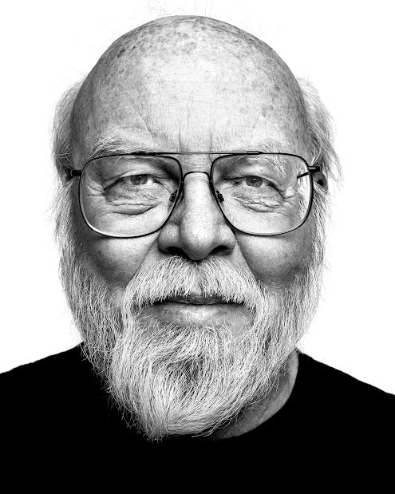

Введение

«Не думаю, что очень важно, какой язык ты изучишь первым. Многие люди учат что-то одно и потом используют всю жизнь. Я думаю, каждый университет должен иметь у себя курс, в котором изучается сравнение языков программирования. Например, в семестре у тебя пять задач на пяти разных языках программирования. Это позволяет людям быстро их изучать, они ведь не настолько разные, и позволяет понять, что из них лучше подходит». Джеймс Гослинг
Жизнь и образованиеДжеймс Гослинг родился в 1955 году в Канаде (город Калгари), где с ранних лет увлекся электроникой и программированием. Он получил степень бакалавра компьютерных наук в Университете Калгари, а затем переехал в США, где успешно защитил докторскую степень (Ph.D.) в Университете Карнеги — Меллон. За свои выдающиеся заслуги перед родиной и мировой наукой ученый был удостоен высшей гражданской награды — ордена Офицера Канады.
Профессиональная деятельностьГослинг получил всемирную известность как главный архитектор и «отец» языка программирования Java, созданного им в 1995 году во время работы в Sun Microsystems. За свою карьеру он внес фундаментальный вклад в ИТ-индустрию: разработал текстовый редактор Gosling Emacs, создал оконную систему NeWS и спроектировал множество компиляторов. Позже ученый занимал руководящие инженерные должности в таких технологических гигантах, как Google, Amazon Web Services (AWS) и стартапе Liquid Robotics.
Информация
- Биография
- Основные достижения/изобретения
- Интересные факты
- Список терминов